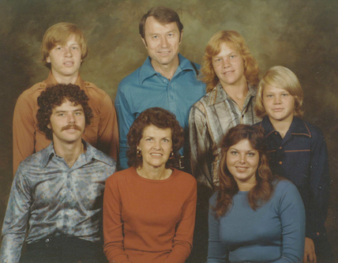

|
|
Tye Noorda Memorial
Lewena "Tye" Noorda (1923 - 2014)
|
Some called her Mom, some called her Tye, some called her Sister Noorda.
Nobody called her Lewena.
- Obituary
- Photo Montage
- Slideshow shown at the Funeral viewings, with a few of the many songs Tye wrote as background music
- The Tye Noorda Collection
- A collection of songs and poems by Tye Noorda, compiled by the BYU College of Fine Arts and Communications
- Memorial News Items
- Funeral Service (April 10, 2014)
- Guest Books (1,
2) - share memories or condolences
- Sampling of Tye's songs, recorded by BYU students (or download full CD):
- More recorded songs
- A few videos:

more to come, give me time...
Problems or comments? email me